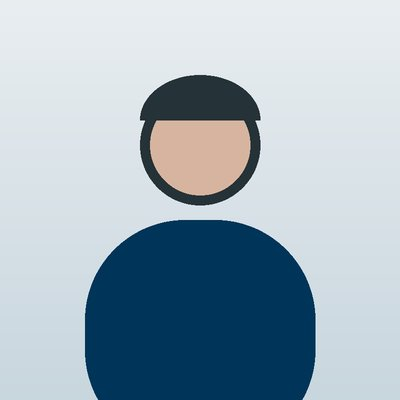

Սովորում եմ վեբ ծրագրավորում։ Այստեղ գրում եմ այն, ինչ սովորում եմ ամեն շաբաթ։

Այս էջում՝ Ինչ եմ սովորում · Իմ նախագծերը · Օգտակար նյութեր
HTML-ը էջի կմախքն է։ Ամեն տարր գրվում է թեգերով, օրինակ՝ <h1>Վերնագիր</h1>։ Ամենադժվարը ինձ համար ֆայլերի ուղիներն էին։
CSS-ը էջի տեսքն է։ Սկսում ենք Դաս 6-ից, իսկ մինչ այդ էջս ունի բրաուզերի լռելյայն տեսքը։
Իմ պլանը՝ սովորել ամեն ինչ մեկ շաբաթում սովորել քայլ առ քայլ։ Ահա, թե ինչպես եմ կառուցել այս կայքը․
Աղյուսակներ և ֆորմաներ։ Հետո՝ CSS։
Լավ կոդը նա է, որը կարող ես կարդալ մեկ ամիս անց։
Փոքրիկ փաստ․ Սևանի ջուրը H2O է, իսկ լճի մակերեսը մոտ 1.24 × 109 մ2 է։
© 2026 Անի Սարգսյան